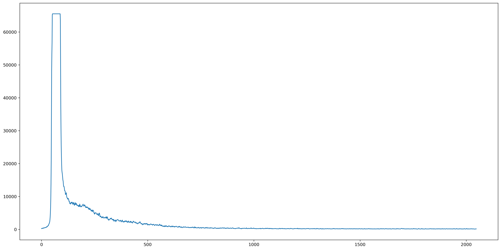
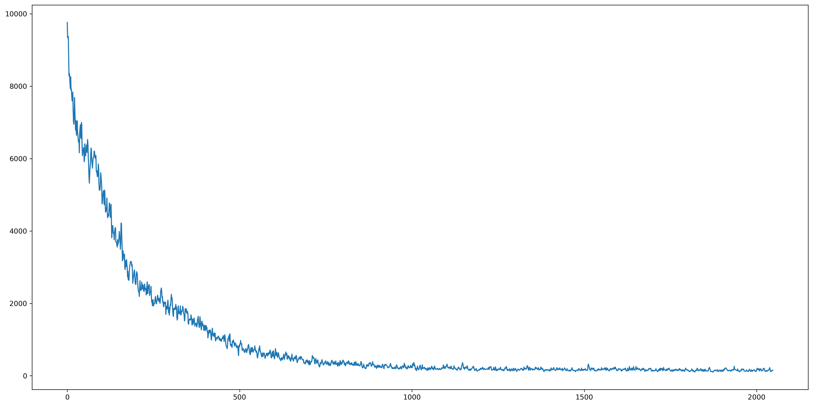

Acquires single or multiple EELS spectra.
acquire_spectra(settings)| settings | EelsAcquisitionSettings | EELS settings structure. |
| List[AdornedSpectrum] | List of objects containing both the EELS spectrum data and metadata describing the system state. |
The function acquires EELS (Electron Energy Loss Spectroscopy) spectra from the microscope. To acquire the spectra, EelsExposureSettings must be provided. Each exposure setting will output a spectrum, which is a 1D array of intensity values.
The function will return an error if the system does not contain an EELS strip detector.
The following example demonstrates how to acquire multiple EELS spectra with the Zebra detector and plot the raw pixel counts:
from matplotlib import pyplot as plot
# EELS acquisition settings with two different exposures
settings = EelsAcquisitionSettings(
eels_detector=EelsDetectorType.ZEBRA,
eels_exposure_settings=[
EelsExposureSettings(exposure_time=10e-3, drift_tube_energy_offset=16),
EelsExposureSettings(exposure_time=10e-3, drift_tube_energy_offset=36)
])
# Run the acquisition
spectra = microscope.analysis.eels.acquire_spectra(settings)
# Plot each acquired spectrum
for spectrum in spectra:
plot.plot(spectrum.data)
plot.show()
Results:


The next example shows how to read EELS related metadata:
# EELS acquisition settings with a single exposure
settings = EelsAcquisitionSettings(
eels_detector=EelsDetectorType.ZEBRA,
eels_exposure_settings=[
EelsExposureSettings(exposure_time=1)
])
# Run the acquisition and collect the first (and only) spectrum
spectrum = microscope.analysis.eels.acquire_spectra(settings)[0]
# Find first metadata custom property collection with an empty scope
custom_properties = [property_list for property_list in spectrum.metadata.custom_properties
if property_list.scope == ""][0].properties
# Find all EELS related custom properties
eels_custom_properties = [custom_property for custom_property in custom_properties
if custom_property.name.startswith("Detectors[Eels")]
# Print the found properties
for custom_property in eels_custom_properties:
print(f"{custom_property.name}: {custom_property.value}")
acquire_spectrum()
EelsDetectorType
detectors.get_eels_detector
detectors.eels_detectors